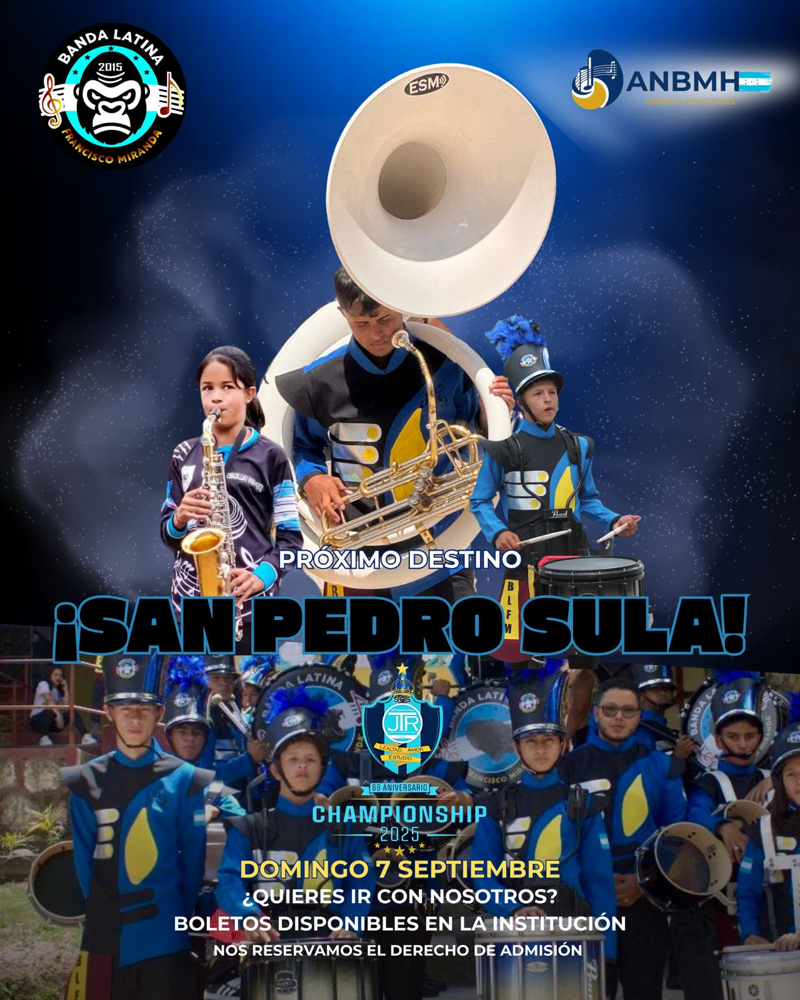
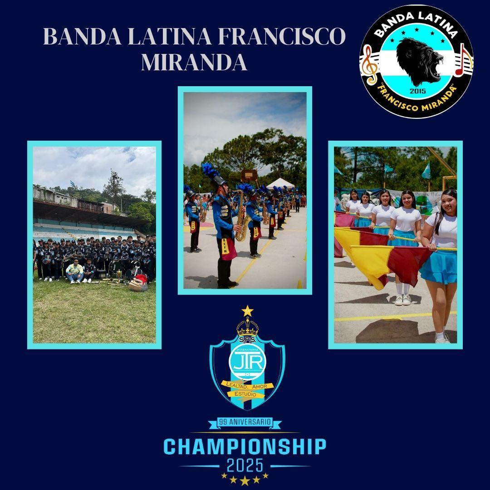
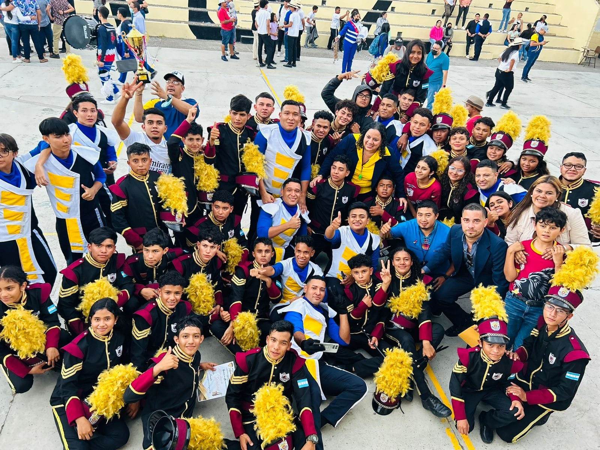

La Banda Latina del Instituto Técnico Francisco Miranda se destaca en la Championship 2025 del JTR
Con gran orgullo y pasión musical, la Banda Latina del Instituto Técnico Francisco Miranda participó en la esperada competencia Championship 2025 organizada por el JTR (Juventud, Talento y Ritmo), dejando una huella imborrable en el escenario nacional de bandas estudiantiles.
El evento, que reunió a agrupaciones de todo el país, tuvo lugar en Tegucigalpa y representó una plataforma de alto nivel para que los estudiantes pudieran demostrar su talento, disciplina y compromiso con la música. La Banda Latina de nuestro instituto sorprendió a jueces y espectadores con su energía, coordinación, trajes vistosos y una impecable interpretación musical.
El repertorio presentado incluyó una mezcla vibrante de ritmos latinos, marchas modernas y adaptaciones originales que pusieron en alto el nombre del Instituto Técnico Francisco Miranda. Cada interpretación fue cuidadosamente preparada durante semanas de ensayo, bajo la guía del instructor musical y con el apoyo de la comunidad estudiantil.
Además del talento artístico, se destacó el espíritu de compañerismo y liderazgo entre los miembros de la banda, quienes no solo representaron a la institución, sino también a los valores de respeto, esfuerzo y superación personal.
“Nos sentimos muy orgullosos de este logro. La banda no solo tocó, sino que transmitió emociones al público. Esto demuestra que la juventud de hoy tiene mucho que aportar a la cultura y al arte de nuestro país”, comentó uno de los docentes organizadores.
La participación en la Championship 2025 marca un hito importante en la historia cultural del instituto, y motiva a más estudiantes a unirse a la banda para los próximos años. El talento demostrado fortalece el compromiso del centro educativo con una formación integral que incluye no solo lo académico, sino también la expresión artística.
El Instituto Técnico Francisco Miranda reafirma su visión de fomentar espacios donde los jóvenes puedan descubrir y potenciar sus talentos, construyendo así una comunidad estudiantil activa, creativa y orgullosa de su identidad.